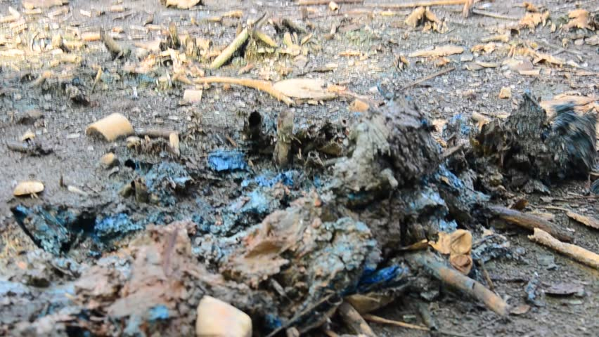

Загрязнение почв — вид антропогенной деградации почв, при которой содержание химических веществ в почвах, подверженных антропогенному воздействию, превышает природный региональный фоновый уровень их содержания в почвах. Основной критерий загрязнения окружающей среды различными веществами — проявление признаков вредного действия этих веществ в окружающей среде на отдельные виды живых организмов, так как устойчивость отдельных видов последних к химическому воздействию существенно различается. Экологическую опасность представляет то, что в окружающей человека природной среде по сравнению с природными уровнями превышено содержание определенных химических веществ за счет их поступления из антропогенных источников. Эта опасность может реализоваться не только для самых чувствительных видов живых организмов.
